No hero here
Around 4am in the morning with the wind blowing on me, since I didn’t change so I used the sleeping bag to cover up myself.
But once I leave the sleeping bag I don’t have any extra clothing to put on.
In the dark night with the freezing wind blowing directly to my spine,
the bike handle is covered with the frozen morning dew; it felt so cold holding it.
The water in the water bottle is very precious, but I still pour some out on a towel, and use the towel to wipe my face.
This counts as another shower.
In the star covered sky, I stand on the hard ground and felt like the ground is moving.
My body keep leaning to the back, just like I am drunk, can’t stand straight.
Wasn’t just one night no sleep to write the travel journal? Is the side effect this serious?
In a moment I will have to ride on the road, this will be ok, right?
I am not able to stand straight, but this doesn’t mean I can’t ride the bike.
I only have to step on the pedals to ride the bike.

In the pitch-black night, I can’t see anything; I don’t know where the moon has gone.
If I need the star to guide me, then I will need to find a pair of night goggles.
I can see things once awhile when cars passing by me.
Sometimes the cars driving against me passes by from the front, the harsh headlights makes my eyes feel like it is going blind.
Other than the cars passing by guiding me, I am depending on the bike.
Since there is barely any light, I took out the flashlight to guide my way.
fter sleeping in bus stops so many times, and listening to cars driving past by,
now I know the least number of cars on the road is between 3-6AM.
Leaving at 4am I need to be careful, not to ride into a gravel pit or a hole, otherwise it should be safe.
I believe a car will not hit me;
this is because even though the only thing showing my existence is a little flashing red light, but it works very well.
A I can hear from far away a car is coming,
and usually I can guess if it is a truck or a small car, then the cars will shine on me with their high beam light,
slow down, pass by me from far away, and then speed up and drive away.
But if there happens to be another car blocking and the car can’t pass by me,
the driver will patiently drive slowly behind, and will pass me at the appropriate time.
Every time a car passes by me, I will say to myself, they can’t hit me,
it will be fine, they can’t hit me, relax, they can’t hit me, don’t be afraid.
However the thing I am afraid the most is falling down.
Even if the cars behind me will try to avoid me, but I still try too ride toward edge.
Of course when I do, there is the possibility of riding on gravel and sandy road surface.
In the pitch dark night my sight level is not very clear, when something appears in my lighted area,
I only have one second to figure out what it is, and if I need to avoid it.
I feel thirsty, but drinking water has no use, this is because riding in the dark makes me feel nervous, the thirstiness is caused by the stress.
In the night I see the animals such as squirrel, skunk, etc flattened by the car,
and the road surface reflect the reddish blood and skin, it looks 10 time more scary than during the day.
I kept pushing the light on my watch to find out what time it is.
But the more I check the time the slower the time passes by.
I had thought there would be light by 6am, but it wasn’t so.
Finally at around 6:30am, the far away horizon finally has some sunlight, I made it to daylight.
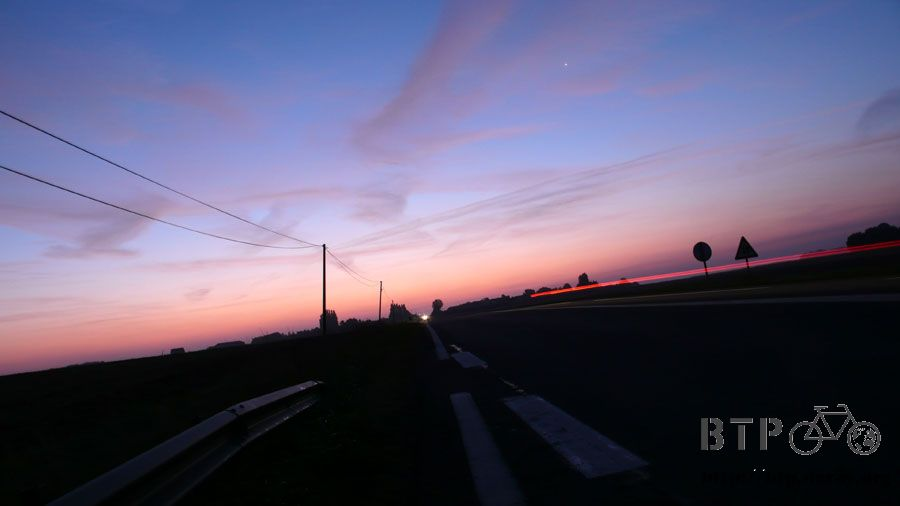
Every time when I see sunrise, I will tell myself where the sun is coming up is my home, it is not far away at all,
just on the other side of the horizon.
And every time I see the sunset, regardless where I am at,
I will tell myself where the sun is going down is my destination, just a hand touch away, almost there.
In the dark night combined with a little light, right now I am in the middle of darkness and sunlight.
It is very amazing feeling being in a huge field feeling the night and day changes.
Before the sun came up, the sky has lots of beautiful colored clouds;
it looks like ribbons sitting in the sky. The clouds are covered by the sunlight colors.

Even though I am trying to ride as much as I can, I still stopped and stood by the bike to enjoy this beautiful scenery.
I didn’t sleep all night but I got this beautiful sunrise.
Of course riding in the night I can’t be wearing sunglasses, this is like riding blind.
So I changed to my normal glasses, putting the sunglasses on top of the bag.
I had put the sunglasses on top of the bag before and never saw it drop.
When the sun came up it is after 7am already. It is today, before the sun gets to the top, I have to get to Paris.

Just when I am about changing to the sunglasses to ride, since wearing glasses I look dorky,
I realized I don’t know where the sunglasses went?!
My goodness, the same style sunglasses I have lost 2 of them.
I don’t know where the sunglasses fell off during the shaky ride, and to go back is impossible.
I can’t get the sunglasses back even with how sorry I am, so I ended up wearing the normal glasses to ride.
When the sun came up, I finished riding the N4 section that allows bike.
After this N4 will become cars only path again, but this also means Paris is near.
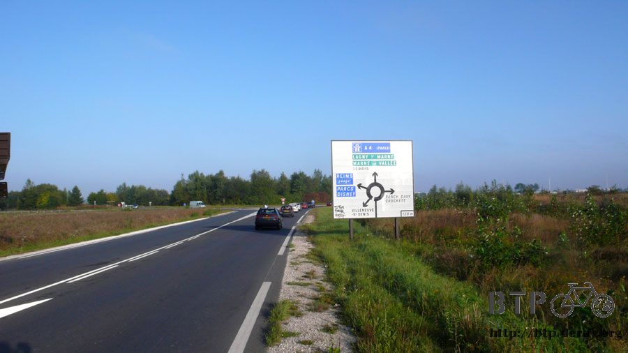
Turning into D231 road going toward the sign that points to Paris.
The fastest way to Paris is A4, but it is a freeway and bike isn’t allowed.
So I will have to go around and try to get into Paris.
Paris is a big city, with lots of parks surrounds the city.

Two years ago when I rode from the southeast,
just riding to the city center got me frustrated, the whole path is very complicated.
At the time regardless how I try I couldn’t into the city,
I ended up having to ride on the A4 freeway to get to the destination, but I don’t want to do that again.
This time I am riding from the east toward Paris, following the sign says Paris,
seeing it changing to freeway I know I am near Paris.

Start riding at 4am, I got to the outskirts of Paris around 9am, the speed is surprising.
Seeing a river that I thought is the Seine River, seeing houses I thought it is the Louvre Museum,
but I have no idea where I am, and it felt like I am toward my final destination.

After getting into the city, the map is not useful anymore,
turning left and right trying to avoid the streets that don’t allow bikes, but those are also the fastest way going to Paris.

Two years ago when I was under the same situation I felt pitiful, the motorcycles can go, but why not bicycles?
So back then I got onto A4 freeway, it would be hard to believe I can’t get to Paris without riding on bicycle allowed path.
Looking at the direction the freeway is going, and then I try to find substitute path going toward similar direction,
passing one area after another, and going toward the city center.

And seeing the river again, this isn’t the Seine River, so just following the riverside I can’t get to my destination either.
I am glad this time I brought the compass; I don’t know how I can get into the city without it.
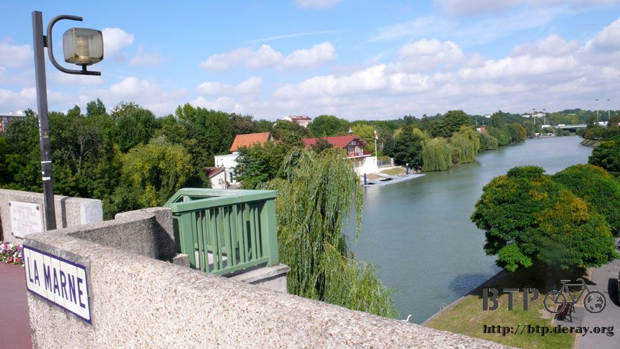
Feeling I am going toward the right direction, but there is no way to prove it.
So when I see someone I will take the map over and go ask direction.
There are lots of tourists in Paris, anywhere you can see tourist looking for direction with a map in hand.
Just like this guy, he is holding a map of Paris.
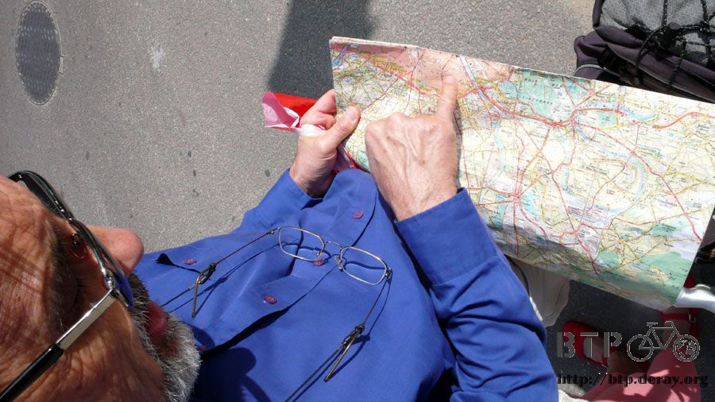
This is very useful, one can buy this at the newspaper stand for $10 Euro ($15USD),
but I don’t have this kind of money to spend right now.
The pink area the guy is pointing to is the city center, this is not far away,
if I just ride a little bit to the west, and follow the Seine River.
Also, when I asked this guy where the Eiffel Tower is, he told me it is very far from here, some more KM of road.
I assured him, it isn’t far, not far at all.
Thanks to the guy, I arrived at Paris. On this trip every time I get into a big city I will stop by the city sign and take a picture.

This photo has the most meaning, the destination Paris, I rode over 100kms with my blue and white slipper to get here.
Since I lost my sunglasses, now I have to show my real face for the photo.
Because I didn’t sleep all night, my face isn’t very shining;
it is covered with some excitement and tiredness, just like someone who is working hard.
One is pushing me down and the other one is making me stepping on the pedal every time.
First riding 170 some km, and then sit in a gas station to rest for 6 hours.
I didn’t waste that time and I sit in the cold to write travel journal, finally rode more than 100km.
I still feel shaky, but when I ride the bike I can still sort of keep my balance.
I feel shaky too if I sit on the bike but feet on the ground, I can’t feel balance anymore.
It feels like there is gravity from all side,
so when I am not careful I will fall to the ground with the bike, riding with no speed and fall to the ground.
Since my body can’t take it anymore, then I might as well take what I got and get to my final destination.
This river is the real Seine River.
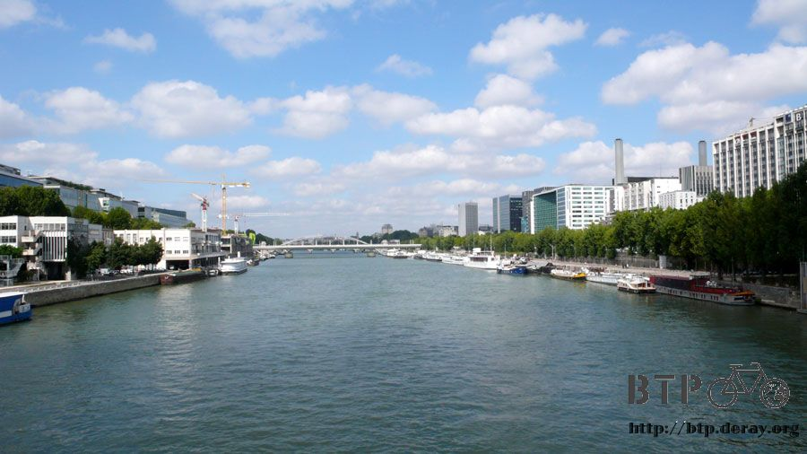
Getting into Paris, I found a packed bridge to cross the river, and then follow the river going west.
Dreaming the last left of the travel for a while, I am almost there.
There are lots of vendors next to the river that sells everything.
I am not familiar with Paris, except the trip 2 years ago.
Because I was riding the bike then, I didn’t go inside a lot of places.

The bike lane inside the city has better condition, compared to the countryside; this is like the heaven of the bike lanes

Comparing to Taiwan, those big cities don’t use traffic as an excuse;
cities like Paris, Moscow, Beijing, and Warsaw all have excellent bike lanes.
Those cities can do it why not Taipei? How about Taiwan?
Please respect bike riders, not just fine people for what they are not suppose to do,
things such as enforcing helmet wear and licensing bicycles just limit bicycle riders,
those rules do not help them. Those are just horrible rules that were made.
Any city mayor, especially Taiwan, if they are willing to ride the bicycle to look around,
they would realize it is very difficult to ride the bicycle in the city.
No bicycle lanes, no decent planning, this just shows bicycles are not allowed in the city.
So if people want to ride their bicycle they would have to go to the countryside.
If one of those days when I can ride bicycle in Taipei like the way I ride in Paris,
that kind of easiness, respected, safety, then I would say Taipei is a first rate city as well.
Paris is currently pushing for public bicycle move, the other cities in France has been doing it for a while now.
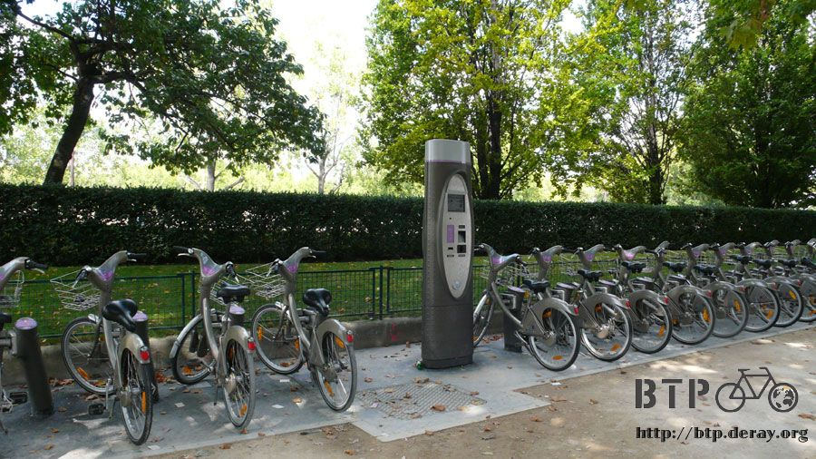
Brand new bicycles line the street; this is the healthy and environmental public transportation mode.

I admire some of the rules in Europe, such as having high gas price.
It would be better if it is more expensive, then everyone will have less chance to be on the road.
The expensive gas actually includes lots or fees, such as environmental cleaning fee,
in theory they should use those fees to pay some of the public transportation cost.
This way, one can take the bus, electric car, or MRT when traveling.
Of course able to ride the bicycle is even more comfortable and easy going.
Imagine, if the MRT in Taipei is like Moscow, the same price regardless how far, all for just $15NT (US0.50USD),
then how many people would be willing to take the MRT and not drive.
Don’t say it is not possible, or the MRT is complicated, the MRT in Moscow is bigger than the one in Taipei County can do this,
why cannot Taipei?
In Paris, in more crowded road,
the bicycle and bus lane are together, in majority of the road the bicycle has their own path to ride on.
This is not only just on the weekends, but in Paris if you ride your bicycle anywhere anytime.
In Taipei, with so many traffic rules,
if Taipei can manage their bicycle rules just like Hong Kong or Paris, I can only say, go for it.
I wish those high political office people can step out and enjoy riding the bicycle in the area they govern in,
experience the same needs as the people who live in those city.
Do you want the people riding the bicycle be getting tickets or smiling?

Following the riverbank, very soon I saw the very tall Eiffel Tower in the distance, going towards the tower!
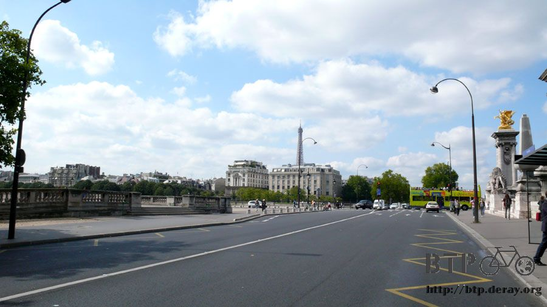
The more I go forward the more the tower is closer to me,
everyone can imagine music in the background, to see what kind of music is playing.
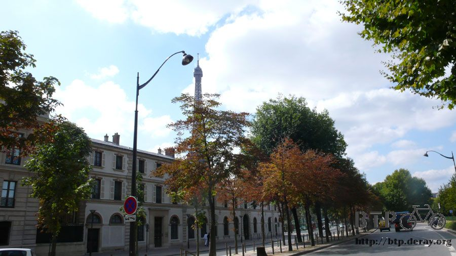
The final destination, the Eiffel Tower.
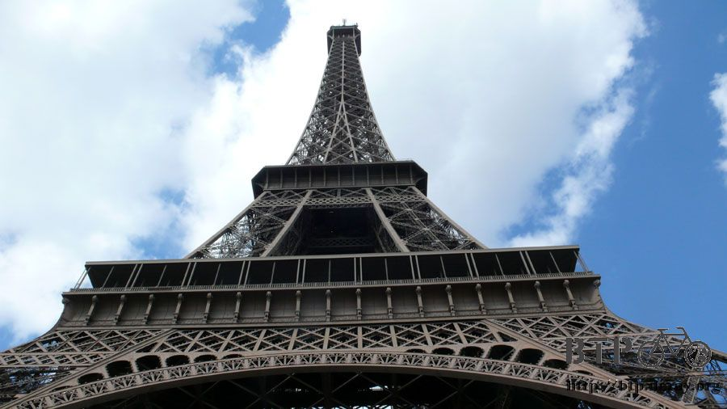
The GPS map, the blue is the path I took.
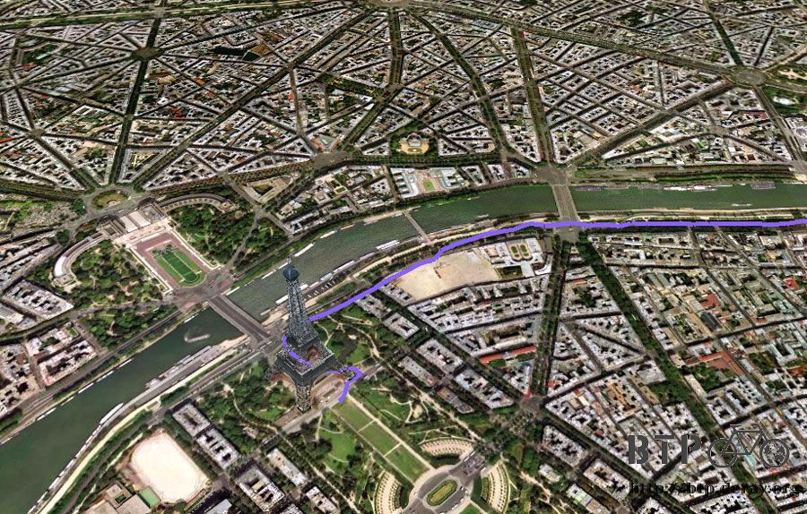
There is a ball game in Paris right now; lots of guys dressed in skirts celebration their own country’s games.
Even if there are no events, I think regardless what time I come here; it will always be this festive.

When I got to the Eiffel Tower, there is no one to welcome me, no reporter asking questions,
no white line designated the finish line, but this is the finish I want.
Lots of tourist, lots of conversation,
no one saw a dirty young man riding a bike hanging with luggage and spare tires quietly arrived at the Tower.
With my tired body, I rode here. I left on April 23, 2007 at 6:50am in the morning;
Mario from the cheap motel took a picture of me then.
The brand new bike, clean cloth, and me not knowing how the trip would turn out, started here, 144 days of traveling.

Every day, I am thankful of everyone’s help and cheer.
Every moment, I am glad I still have energy continue to ride.
Every minute I always remember there are lots of people expecting me arriving to Paris.
Every second I tried to breathe to prove I did live my life to the fullest.
After 14000+km road (8700 miles), almost 5 months, the bike is now dirty,
everything that can broke has broke once, lost lots of luggage, I got darker from the sun,
my body has lots of scars, although I am not sure if I got fatter or skinnier, but one thing I do know,
I am dirty, each day dirtier than the other. Dusting off myself, it is ok to get dirty, I don’t care.
As long as I have a breath left in me, just with this breath, anything I want to do is possible.
Taking out the flag from the bag, time for flying.
Putting the camera on the ground, taking the flag next to the bike,
the people passing by all stopped and looked at me with a curious look on their face.

The bike leaning against the fence, all around the tourist are chatting, I can clearly hear my heart beat.
God, if I will die from exhaustion, then let me take this picture first.
Click, the sound of the camera, this moment is now captured.
Time, September 12, 2007, 1:55pm.
The previous travel journals of Taiwan and France, people have noticed the last entry I write hastily.
Because this is just part of a trip, this doesn’t mean the world stops, life is long, there will be lots more exciting trips waiting for me.
So after two years circling Taiwan I went on a trip circling France, after 2 years I rode from Beijing to Paris.
So now where should I go?
Right now there is only one place I want to be.
.
.
.
.
Right now I want to go home.
After taking the picture, it is done. It feels good this is it, I have been dizzy for a while, and finally I can sit and rest.
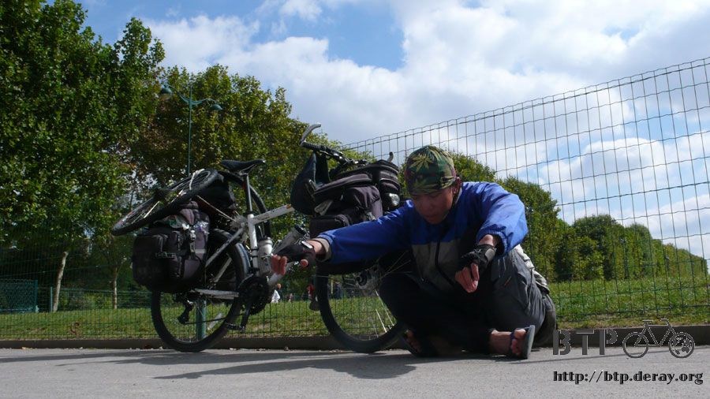
After I sit down it felt I can go to sleep anytime,
but right now there is something I must do, I can finally open the envelope from Peter.
There is a small note inside with $50 Euro ($75USD), this is not small amount, about $2000NT.

Looking at the money inside, if I knew it was money, and then I wouldn’t have took it;
I would pretend forgetting about it on the table.
I already spent the night at Peter’s home, a nice meal and a bath, this already a lot, how can I take this money.
I guess Peter knew I wouldn’t have accepted it,
so he wrote on the envelope only open after arriving in Paris, so even if I want to give it back,
there is no way I could.
Holding this money, I went to eat a nice meal with salad, BBQ meat, fries and bread in a sidewalk café.
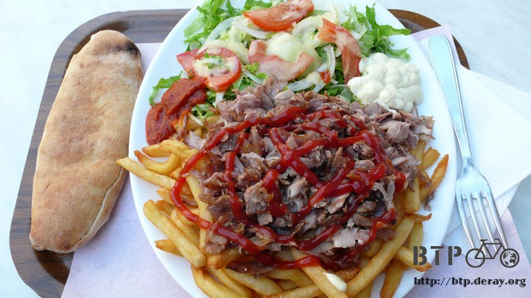
After eating so many days of toast, now eating this full meal, my mouth chewing, then my tears started falling down.
The boss said is the hot sauce too hot? The whole atmosphere is not the same now.
In this trip, I owe lots to the countries I passed by, and the people who are on this land too much.
I can’t give back all, every time changing to a new country; I use the local dialect to say thanks.
I want to thank those countries, they give me food when I am hungry, letting me a place to sleep in cold nights,
and a warm hands helping me when I need it. I am not the best, the people I meet on this trip are.
I didn’t finish this trip on my own; I really did finish 14000+km on this trip, on a bicycle.
The bike didn’t require any gas, but it required lots of pumps for the tire. Lots of inner tubes and tires were broken on this trip.
In this trip I don’t feel lonely because there is a partner with me, sharing every moment with me.
In the cold night when I am inside the tent, looking at the bike, I sadly say today you will have to experience the coldness again.
When it rains, tire blew, or when I break something, I will apologize to the bike saying I am sorry for putting you in this position.
When fixing the bike, I would sing and say, don’t worry, when I finish fixing you, we will continue to ride the rest of the trip.
Lots of people told me to toss away the broken tires, riding with broken tire, other than being very heavy, what is the point?
Of course they have meaning, they are part of the bike, how can I toss them on the side of the road.
Dido, is not like a boat where it talks; it endures the bad road and weather condition silently.
I am lucky, I can sit on you and ride all the way from Beijing to Paris.
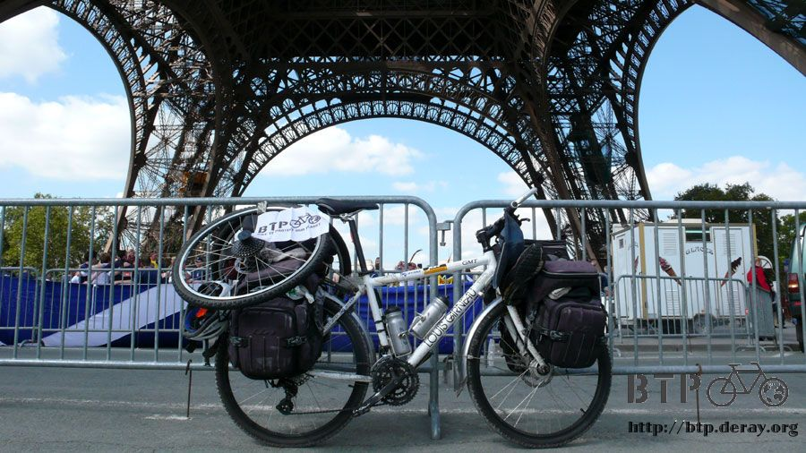
Dido, if you can say something, what would you want to say?
Looking at you from sitting on the ground, I just starred at you.
Lots of people say I can ride so far, but I am not a hero, because I am not the one that is tired, anyone can ride this.
So any compliments toward me you should proudly receive them, because you are excellent.
So for people who do not know who I am, no need to remember who I am either.
Just remember, in 2007, a bicycle crossed Asia to Europe, finished a trip a car took over 100 years ago.
What is the point for this trip? I don’t want to argue, I just want to let everyone know there are too many cars,
and the exhaust gas from the car is about to destroy the earth.
A 100 years after now when you and I are not here, what will we leave behind?
I hope in future time, there will be people still hearing about this trip, and hearing people’s laugh from riding bicycles.
The End